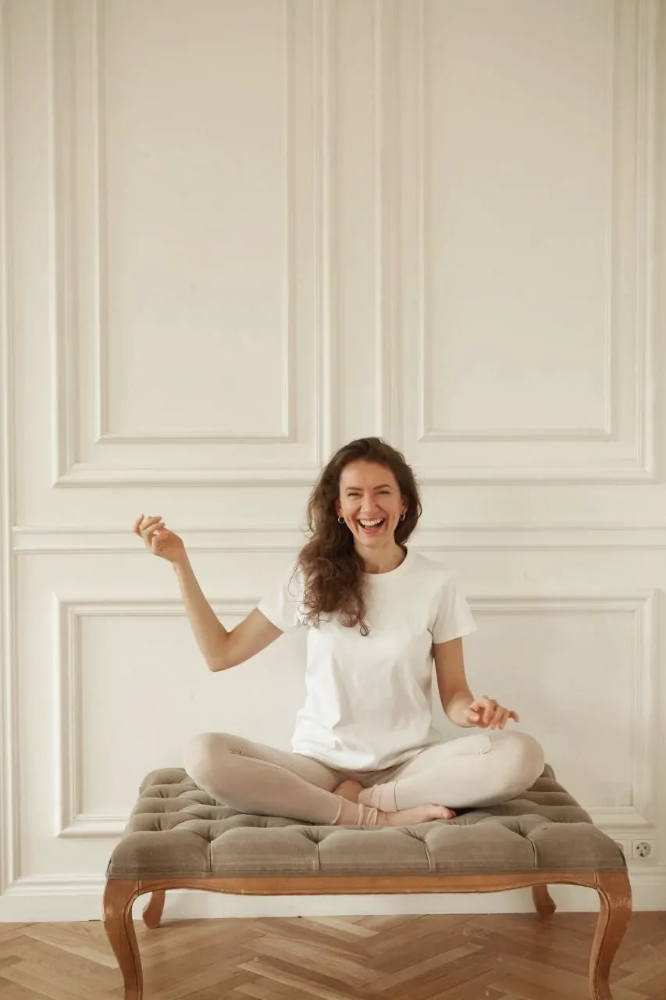

Преподаватель йоги / 3–12 июля 2027
Мария
Хавкина
Врач, специалист по адаптивной физической культуре, йогатерапевт и психолог. Ведёт практики в йога-туре на Камчатку 3–12 июля 2027 года.

О Марии
Врач, психолог, йогатерапевт и один из ведущих преподавателей Института восточных методов реабилитации
Мария Хавкина — проректор по развитию и один из ведущих преподавателей Санкт-Петербургского института восточных методов реабилитации под рук. Артёма Фролова — авторитетной школы, основанной в 2016 году, где готовят специалистов по йогатерапии и адаптивной физической культуре, а также преподавателей йоги.
Совместно с коллегами Мария руководит несколькими обучающими программами для преподавателей и специалистов. Её профиль — йогатерапия и адаптивная йога для женщин: от сбалансированной практики с учётом менструального цикла до подготовки к беременности, восстановления после родов и работы со зрелым возрастом.
Мария долгое время была автором и ведущей онлайн-проекта YogaMammy и автором книги «Мамина йога от А до Я» — её методика восстановления после родов хорошо известна в профессиональном сообществе.
Санкт-Петербургский институт восточных методов реабилитации под рук. Артёма Фролова
Проректор по развитию. Школа основана в 2016 году и готовит специалистов по йогатерапии и адаптивной физкультуре.
YogaMammy
Автор и ведущая онлайн-проекта, ставшего школой восстановления после родов для тысяч женщин.
Книга «Мамина йога от А до Я»
Авторский метод безопасной практики для мам — от первых недель после родов и далее.
Обучающие программы
С коллегами руководит программами подготовки преподавателей йоги и специалистов реабилитации.
Специализация
Широкий спектр женских состояний и запросов: практика подбирается под состояние тела, а не под абстрактный план.
Йогатерапия и адаптивная йога
Авторские программы для преподавателей и специалистов. Точный подбор упражнений под состояние и запрос каждой женщины.
Тазовое дно и диастаз
Глубокий опыт работы с дисфункциями тазового дна и диастазом прямых мышц живота — мягко, безопасно, по существу.
Беременность и послеродовое восстановление
Подготовка к беременности, восстановление после родов. Методика из книги «Мамина йога от А до Я» хорошо известна в профессии.
Цикл и зрелый возраст
Сбалансированная практика с учётом менструального цикла и бережная работа со зрелым возрастом.
Психология и работа с телом
Профессия психолога помогает слышать не только то, что говорит тело, но и то, о чём молчит.
Персональные рекомендации
Конкретные инструменты для работы с женским здоровьем: безопасные упражнения для реабилитации — именно для вашего тела.
«Практика с Марией — мягкая, глубокая и выверенная работа с телом»
После занятия тело чувствует себя отдохнувшим и разогретым, как после хорошего массажа
Что даёт практика
Такая практика помогает восстановиться и перезагрузиться после насыщенных дней программы, снять накопившееся напряжение и вернуть ресурс. Мария умеет составлять эффективные программы адаптивной йоги, точно подбирая упражнения под состояние и запрос каждой участницы.
- Мягкое снятие напряжения после дня на маршруте
- Восстановление и «перезагрузка» тела и головы
- Упражнения, подобранные под ваше состояние
- Персональные рекомендации по физической терапии — сверх групповой практики
- Конкретные инструменты для работы с женским здоровьем
Мария ведёт йога-тур на край земли
Йога-тур «Камчатка» с практиками йоги, пранаямы и медитации — 3–12 июля 2027 года. Восхождения к вулканам, Тихий океан и возвращение к себе вечером.
- 01
Ежедневные практики
Йога, пранаяма и медитация каждый день тура — мягкие и глубокие, чтобы снять напряжение после насыщенных маршрутов.
- 02
Практика под нагрузку
Программа адаптирована под восхождения и долгие выезды: тело разогревается утром и восстанавливается вечером.
- 03
Даты тура
3–12 июля 2027 года. Группа до 24 человек, трансферы, проживание и трёхразовое питание — включены.
- 04
Личная консультация
Каждая участница получает персональные рекомендации по физической терапии и реабилитации — сверх групповой практики.
Хотите попасть в группу Марии? 3–12 июля 2027 — места ограничены.
Фото
Мария в кадре: практика, отдых и живая улыбка.
Связаться
Вопрос Марии
Напишите — Мария ответит на вопросы по практике в туре и подскажет, что важно учесть именно вашему телу перед поездкой.
Тур-лидер: +7 909 832-30-88, Telegram @elena_53east_yoga